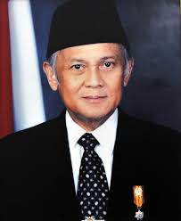

Bacharuddin Jusuf Habibie adalah insinyur aeronautika dan negarawan Indonesia yang lahir pada 25 Juni 1936 di Parepare, Sulawesi Selatan. Beliau dikenal sebagai salah satu ilmuwan terbesar yang pernah dimiliki Indonesia. Habibie menempuh pendidikan teknik penerbangan di RWTH Aachen, Jerman, dan berhasil meraih gelar doktor dengan predikat summa cum laude. Teorinya tentang keretakan logam pada pesawat terbang dikenal dunia sebagai "Faktor Habibie". Beliau menjabat sebagai Menteri Riset dan Teknologi selama 20 tahun sebelum akhirnya menjadi Presiden ke-3 Republik Indonesia pada tahun 1998.

Memimpin kebijakan teknologi dan industri strategis Indonesia selama 20 tahun, mendorong kemandirian teknologi nasional.

Menjabat sebagai Presiden ke-3 RI menggantikan Soeharto pasca reformasi 1998.
Mendirikan industri pesawat terbang pertama di Asia Tenggara.
1954–1955
1955–1960
Lulus summa cum laude, 1965